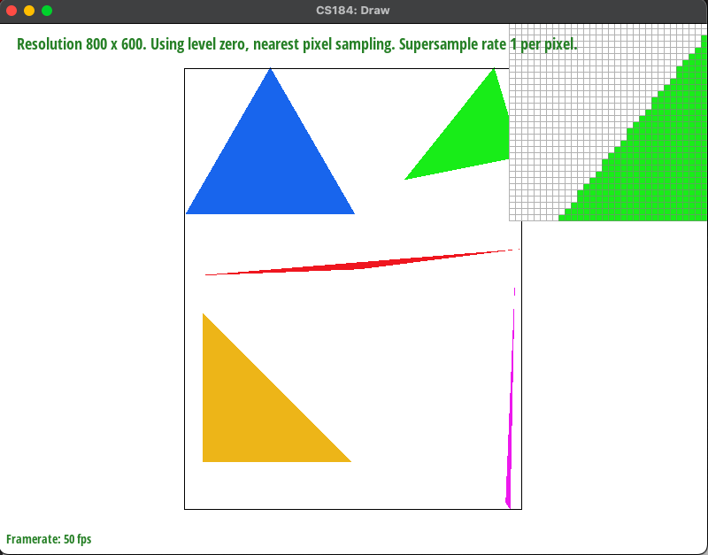

Project 1: Rasterizer
Overview
We created a rasterizer that can draw images with different resolutions with supersampling, do hierarchical transforms, and texture mapping with antialiasing. We thought it was interesting that we can calculate what the color for a pixel should be based on its surrounding colors. We also thought it was interesting that rendering pictures requires so much memory since we need to store a larger version of the picture as a buffer.
Task 1
We rasterized the triangles by iterating through all the points in a bounding box that just encapsulates the triangle. We offset the point by 0.5 in both x and y to sample the middle of the point and check if that point was within the bounds of the triangle using the point-in-triangle test. Because we could not assume anything about the ordering of the triangle vertices, we also checked if all the points were outside all of the lines, and it must be inside of the triangle if the vertices were passed in in another order. If it passed this test, we set it inside of the sample buffer. We found the bounding box by finding the max and min x and y values that the triangle touches. We use these four points as our bounding box of the triangle.

Task 2
For supersampling, we followed a similar algorithm to sampling, but for each point, we sampled the square root of sample rate pixels instead of one. To do this, we traversed the pixel array with a nested for loop, and within it, we had another nested for loop to traverse the sampling points based on the sampling rate. This splitted up each pixel into a grid of squares where we sampled at the center of each square. The color assigned was then based on the triangle line test as in task 1. We then modified the resolve_to_framebuffer method to traverse the pixel array, and eat each pixel, we would have a nested for loop that averaged the values at the sample points to give the final value for that pixel. Supersampling is useful for making our edges and corners look smooth, which reduces the jaggies effect. In the rasterization process, the main modification made was the extra nested for loop to go through the sample points based on the sampling rate. Below shows the effect of supersampling at 1, 4, and 16 (from top image to bottom), and it shows how the corner of the triangle smooths by “blurring” pixels that are near or on the line. At a rate of 1, there are gaps in the triangle because pixels that are partially within the bounds of the triangle are not counted as part of the triangle. However, when we increase the sample rate, these pixels are given an averaged value between being within the triangle and outside of it. This gives a smoother transition along the boundaries and thus smooths out the triangle’s edges.

Task 3
We made the robot squeeze its head
Task 4
Barycentric coordinates allow us to sample a point within the triangle based on its position from as well as the values of the vertices. By using the formulas for alpha, beta, and gamma, we obtain the weights corresponding to that point, allowing us to calculate any average value for that point ( ex. color, texture). For example, if we wanted to make a gradient in a triangle with the colors red, green, and blue each at the vertices VA, VB, and VC, we would use barycentric coordinates to compute the required color value at each point within the triangle.
Task 5
Pixel sampling is trying to map a color in a texture onto a screen. We have a texture in the coordinates (u,v) that we want to map onto a screen (x,y). We can convert these coordinates using the barycentric coordinates method.
Sampling using nearest will round the uv coordinates to the nearest color in the MIP Map. To implement this, we scaled and rounded the uv coordinates to the nearest pixel in the mipmap. Sampling using bilinear will linearly interpolate the four colors surrounding the uv point to get a more accurate color. We found the four surrounding colors by flooring and ceiling the scaled uv coordinates. We then found the vertical and horizontal distances of the uv point from the bottom left corner and used that to linearly interpolate the colors. We interpolated horizontally on the colors above and below the point, and combined those results by interpolating them vertically.
Since nearest just rounds to the nearest color, it can lead to more aliasing.
Below is a comparison between sample rate 1 with nearest, sample rate 1 with bilinear, sample rate 16 with nearest, and sample rate 16 with bilinear. For the sample rate 1 comparison, the back heel of the Italian boot is more clearly defined when using bilinear interpolation, and for the sample rate 16 comparison, bilinear interpolation gives the island to the left a smoother border. The differences between the two will get greater if there is a drastic change in color over a smaller space, like the difference between the land and sea.
Task 6
Level sampling is when we match the resolution of a texture with our sampling rate. To do this, we used a mipmap, which contained different resolutions of a texture and assigned those resolutions a level. We first obtained the uv coordinates of a point within a triangle by finding its barycentric coordinates and computing the weighted average based on the uv coordinates of the vertices. This allowed us to calculate the level of the mipmap that corresponded to the uv coordinate by using the formula given in lecture (insert formula). The level that was returned was based on the lsm variable. If it was level zero, we returned 0. If it was L_nearest, we rounded the level using the round method. Finally, for L-linear, we returned the level as a float, and in our sample method, to compute the color, we took the floor and ceiling of the level and calculated the weighted average of the two levels (ex. If the level was 0.3, we would have the color value 0.7 x (level 0) + 0.3 x (level 1)).
Increasing the sampling rate seems to be very effective, but it requires a substantial amount of memory and is slow at higher sampling rates. Using level sampling allowed for a faster process since we could sample lower resolution textures. However, the image was not as clear, and it uses a large amount of rendering since it needs to store different resolutions of a texture. Bilinear and nearest seem to be the most effective for antialiasing, and it is quite fast. For bilinear pixel sampling, we were able to interpolate colors around four points, so it was similar to sampling at a rate of 4, but requiring less memory as it did not need to increase its sample buffer size.